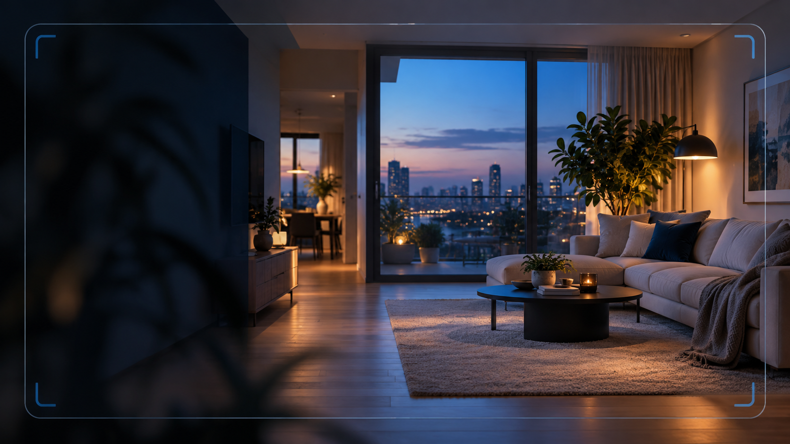

ILUSTRACJA KONCEPCJI Jeden panel. Windows w domu. Podgląd w telefonie. 01 Podgląd na żywo02 Lokalne archiwum03 Konto i dodatkowy PIN04 Panel na telefonie
Wszystko, co ważne.W jednym miejscu. Nie musisz przekopywać się przez ustawienia. Najważniejsze elementy monitoringu mają być czytelne od pierwszego spojrzenia.
01 / PODGLĄD WINDOWS + TELEFON
HOME SECURITY WIDOK POGLĄDOWY
Twoja kamera, jeden widok Podgląd pojawia się po połączeniu urządzeń. Stan połączenia Nagrania Ustawienia
Podgląd bez zbędnych ekranów Sprawdzaj obraz i stan połączenia z panelu właściciela. Widok na telefonie nie przejmuje kamery komputera.
Zobacz prezentację panelu →
02 / ARCHIWUM ▤
Nagrania we właściwym miejscu Wracaj do zapisanych materiałów w archiwum. Pliki lokalne znajdują się w wybranym folderze komputera.
Poznaj funkcje → 03 / DOSTĘP ◇
Panel chroniony dostępem Oddzielna strefa właściciela, logowanie i dodatkowy PIN. Publiczna strona nie wyświetla prywatnego obrazu z kamery.
Jak działa dostęp →
Od instalacji do podglądu.Trzy proste kroki. Najpierw konfiguracja komputera z kamerą. Potem połączenie z panelem na telefonie. Bez udawania, że monitoring jest gotowy przed ustawieniem urządzeń.
Sprawdź wymagania ↗
01 Zainstaluj HOME SECURITY Pobierz aktualną wersję Windows i przygotuj kamerę oraz mikrofon.
02 Wybierz urządzenie i zapis Ustaw źródło obrazu oraz folder, do którego mają trafiać nagrania.
03 Otwórz panel właściciela Zaloguj się, podaj PIN i sprawdź połączenie na telefonie.
Zacznij od swojego komputera. Zapoznaj się z wymaganiami, zainstaluj program i sprawdź możliwości obecnego wydania.
HOME SECURITY jest projektem rozwojowym i nie zastępuje certyfikowanego systemu alarmowego. Jak zacząć? Sprawdź, jak połączyć komputer z kamerą i telefon.
Jak działa → Co potrafi system? Poznaj możliwości oraz ograniczenia obecnego wydania.
Zobacz możliwości → Potrzebujesz pomocy? Przejdź do instrukcji, odpowiedzi i kontaktu.
Otwórz pomoc →